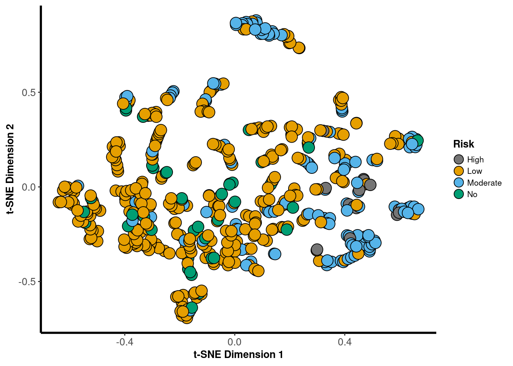
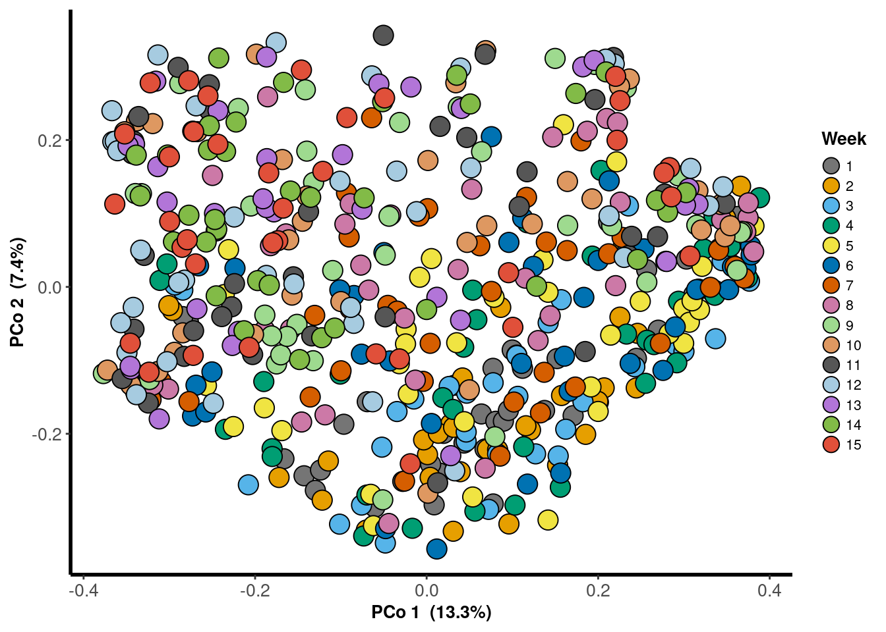
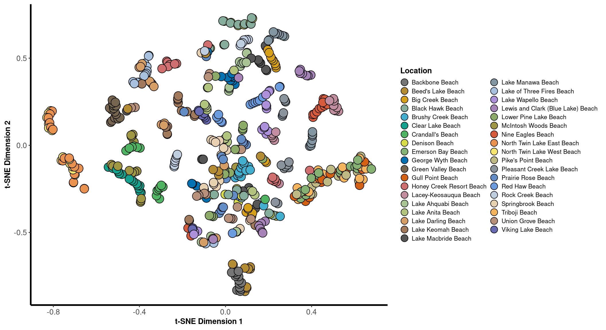

Ordination
2018
PCoA
Lake
phylosmith::pcoa_phyloseq(phylosmith::taxa_filter(lake_po, treatment = "Year", subset = "2018"), "Location", circle = FALSE)
Week
phylosmith::pcoa_phyloseq(phylosmith::taxa_filter(lake_po, treatment = "Year", subset = "2018"), "Week", circle = FALSE)
Risk Level
phylosmith::pcoa_phyloseq(phylosmith::taxa_filter(lake_po, treatment = "Year", subset = "2018"), "Risk", circle = FALSE)NMDS
Lake
nmds <- phylosmith::nmds_phyloseq(phylosmith::taxa_filter(lake_po, treatment = "Year", subset = "2018"), "Location", circle = FALSE)## Run 0 stress 0.1393965
## Run 1 stress 0.1398331
## ... Procrustes: rmse 0.02555364 max resid 0.1112875
## Run 2 stress 0.1403284
## Run 3 stress 0.1392105
## ... New best solution
## ... Procrustes: rmse 0.02682761 max resid 0.1101018
## Run 4 stress 0.140865
## Run 5 stress 0.1416363
## Run 6 stress 0.1418019
## Run 7 stress 0.1405055
## Run 8 stress 0.1411806
## Run 9 stress 0.1411152
## Run 10 stress 0.1404088
## Run 11 stress 0.1400349
## Run 12 stress 0.1390551
## ... New best solution
## ... Procrustes: rmse 0.003772077 max resid 0.04741309
## Run 13 stress 0.143058
## Run 14 stress 0.1411499
## Run 15 stress 0.1398941
## Run 16 stress 0.1407491
## Run 17 stress 0.1410781
## Run 18 stress 0.1399551
## Run 19 stress 0.1417259
## Run 20 stress 0.1407233
## Run 21 stress 0.1407663
## Run 22 stress 0.1392084
## ... Procrustes: rmse 0.003796097 max resid 0.04675711
## Run 23 stress 0.1398254
## Run 24 stress 0.139484
## ... Procrustes: rmse 0.005052784 max resid 0.08109976
## Run 25 stress 0.1417852
## Run 26 stress 0.1414197
## Run 27 stress 0.1389638
## ... New best solution
## ... Procrustes: rmse 0.002358033 max resid 0.04621079
## Run 28 stress 0.1413823
## Run 29 stress 0.1424079
## Run 30 stress 0.1417739
## Run 31 stress 0.1404716
## Run 32 stress 0.1426406
## Run 33 stress 0.1407669
## Run 34 stress 0.1414854
## Run 35 stress 0.1422808
## Run 36 stress 0.1389933
## ... Procrustes: rmse 0.003399188 max resid 0.04719818
## Run 37 stress 0.1397432
## Run 38 stress 0.1412152
## Run 39 stress 0.1392059
## ... Procrustes: rmse 0.004232367 max resid 0.04654028
## Run 40 stress 0.1399177
## Run 41 stress 0.140658
## Run 42 stress 0.1407634
## Run 43 stress 0.1405988
## Run 44 stress 0.1396391
## Run 45 stress 0.1413392
## Run 46 stress 0.1429663
## Run 47 stress 0.1414466
## Run 48 stress 0.1410592
## Run 49 stress 0.1416487
## Run 50 stress 0.1395546
## Run 51 stress 0.140663
## Run 52 stress 0.1401136
## Run 53 stress 0.1390161
## ... Procrustes: rmse 0.003154651 max resid 0.04580177
## Run 54 stress 0.1417163
## Run 55 stress 0.1407358
## Run 56 stress 0.1412667
## Run 57 stress 0.1395779
## Run 58 stress 0.1416698
## Run 59 stress 0.1399921
## Run 60 stress 0.1404287
## Run 61 stress 0.141743
## Run 62 stress 0.1412369
## Run 63 stress 0.1391396
## ... Procrustes: rmse 0.002789885 max resid 0.03833028
## Run 64 stress 0.1426773
## Run 65 stress 0.1422948
## Run 66 stress 0.1401116
## Run 67 stress 0.1414727
## Run 68 stress 0.1391563
## ... Procrustes: rmse 0.002746822 max resid 0.03822767
## Run 69 stress 0.138984
## ... Procrustes: rmse 0.002825539 max resid 0.04690727
## Run 70 stress 0.1400767
## Run 71 stress 0.1423444
## Run 72 stress 0.1413379
## Run 73 stress 0.1418484
## Run 74 stress 0.1427368
## Run 75 stress 0.1404386
## Run 76 stress 0.1393142
## ... Procrustes: rmse 0.003939902 max resid 0.04555354
## Run 77 stress 0.1402262
## Run 78 stress 0.1399555
## Run 79 stress 0.1391517
## ... Procrustes: rmse 0.003841315 max resid 0.04706029
## Run 80 stress 0.1404561
## Run 81 stress 0.1404325
## Run 82 stress 0.1401342
## Run 83 stress 0.141134
## Run 84 stress 0.1411798
## Run 85 stress 0.1412702
## Run 86 stress 0.1390149
## ... Procrustes: rmse 0.003544971 max resid 0.04666878
## Run 87 stress 0.1415003
## Run 88 stress 0.1400512
## Run 89 stress 0.1389848
## ... Procrustes: rmse 0.003603875 max resid 0.04741237
## Run 90 stress 0.1399661
## Run 91 stress 0.1416963
## Run 92 stress 0.1412914
## Run 93 stress 0.1402101
## Run 94 stress 0.1416274
## Run 95 stress 0.1419915
## Run 96 stress 0.1414501
## Run 97 stress 0.1411355
## Run 98 stress 0.1401239
## Run 99 stress 0.1402618
## Run 100 stress 0.1389901
## ... Procrustes: rmse 0.003805658 max resid 0.04755983
## *** No convergence -- monoMDS stopping criteria:
## 44: no. of iterations >= maxit
## 45: stress ratio > sratmax
## 11: scale factor of the gradient < sfgrminnmds
Week
nmds <- phylosmith::nmds_phyloseq(phylosmith::taxa_filter(lake_po, treatment = "Year", subset = "2018"), "Week", circle = FALSE)## Run 0 stress 0.1393965
## Run 1 stress 0.1412539
## Run 2 stress 0.1428037
## Run 3 stress 0.1391939
## ... New best solution
## ... Procrustes: rmse 0.02589017 max resid 0.1093293
## Run 4 stress 0.1402996
## Run 5 stress 0.1404912
## Run 6 stress 0.1403653
## Run 7 stress 0.140482
## Run 8 stress 0.1449001
## Run 9 stress 0.1412655
## Run 10 stress 0.1390284
## ... New best solution
## ... Procrustes: rmse 0.00360399 max resid 0.04217317
## Run 11 stress 0.1410581
## Run 12 stress 0.1397898
## Run 13 stress 0.1411736
## Run 14 stress 0.1431087
## Run 15 stress 0.1415128
## Run 16 stress 0.1406669
## Run 17 stress 0.1413385
## Run 18 stress 0.1397246
## Run 19 stress 0.1416533
## Run 20 stress 0.1419466
## Run 21 stress 0.1409147
## Run 22 stress 0.1395622
## Run 23 stress 0.1405362
## Run 24 stress 0.1412612
## Run 25 stress 0.1418111
## Run 26 stress 0.1406755
## Run 27 stress 0.1403144
## Run 28 stress 0.1422398
## Run 29 stress 0.1390845
## ... Procrustes: rmse 0.002315223 max resid 0.0331329
## Run 30 stress 0.1401978
## Run 31 stress 0.141716
## Run 32 stress 0.1403169
## Run 33 stress 0.1404921
## Run 34 stress 0.1406158
## Run 35 stress 0.1406294
## Run 36 stress 0.1399387
## Run 37 stress 0.141167
## Run 38 stress 0.1400811
## Run 39 stress 0.140272
## Run 40 stress 0.1414621
## Run 41 stress 0.1403766
## Run 42 stress 0.1410541
## Run 43 stress 0.139439
## ... Procrustes: rmse 0.02715388 max resid 0.114405
## Run 44 stress 0.139182
## ... Procrustes: rmse 0.003524055 max resid 0.04662843
## Run 45 stress 0.1410598
## Run 46 stress 0.1403799
## Run 47 stress 0.142085
## Run 48 stress 0.1402659
## Run 49 stress 0.1402771
## Run 50 stress 0.1430482
## Run 51 stress 0.1409751
## Run 52 stress 0.1407488
## Run 53 stress 0.141035
## Run 54 stress 0.140003
## Run 55 stress 0.1403445
## Run 56 stress 0.1423483
## Run 57 stress 0.139652
## Run 58 stress 0.1409707
## Run 59 stress 0.14157
## Run 60 stress 0.1410489
## Run 61 stress 0.1401712
## Run 62 stress 0.1390178
## ... New best solution
## ... Procrustes: rmse 0.003515899 max resid 0.04171313
## Run 63 stress 0.1392385
## ... Procrustes: rmse 0.003638198 max resid 0.04810964
## Run 64 stress 0.1423122
## Run 65 stress 0.141864
## Run 66 stress 0.1417376
## Run 67 stress 0.1409601
## Run 68 stress 0.1416686
## Run 69 stress 0.1395591
## Run 70 stress 0.140113
## Run 71 stress 0.1397087
## Run 72 stress 0.1409031
## Run 73 stress 0.1420326
## Run 74 stress 0.1412656
## Run 75 stress 0.1403459
## Run 76 stress 0.1413774
## Run 77 stress 0.14062
## Run 78 stress 0.1409174
## Run 79 stress 0.1396286
## Run 80 stress 0.1416564
## Run 81 stress 0.1425551
## Run 82 stress 0.1414633
## Run 83 stress 0.1422059
## Run 84 stress 0.1406375
## Run 85 stress 0.1449562
## Run 86 stress 0.1411502
## Run 87 stress 0.1424762
## Run 88 stress 0.1390722
## ... Procrustes: rmse 0.002901087 max resid 0.03901993
## Run 89 stress 0.1408394
## Run 90 stress 0.1416997
## Run 91 stress 0.1396296
## Run 92 stress 0.1391972
## ... Procrustes: rmse 0.003749865 max resid 0.04196664
## Run 93 stress 0.1402056
## Run 94 stress 0.1410118
## Run 95 stress 0.1411064
## Run 96 stress 0.1401174
## Run 97 stress 0.1412566
## Run 98 stress 0.1408048
## Run 99 stress 0.1402223
## Run 100 stress 0.1416624
## *** No convergence -- monoMDS stopping criteria:
## 45: no. of iterations >= maxit
## 45: stress ratio > sratmax
## 10: scale factor of the gradient < sfgrminnmds
Risk Level
nmds <- phylosmith::nmds_phyloseq(phylosmith::taxa_filter(lake_po, treatment = "Year", subset = "2018"), "Risk", circle = FALSE)## Run 0 stress 0.1393965
## Run 1 stress 0.1409579
## Run 2 stress 0.1418586
## Run 3 stress 0.1413652
## Run 4 stress 0.1411033
## Run 5 stress 0.1416194
## Run 6 stress 0.1396993
## ... Procrustes: rmse 0.02611647 max resid 0.1108218
## Run 7 stress 0.1395927
## ... Procrustes: rmse 0.02680178 max resid 0.1104663
## Run 8 stress 0.1422965
## Run 9 stress 0.1389635
## ... New best solution
## ... Procrustes: rmse 0.02691546 max resid 0.110028
## Run 10 stress 0.1412937
## Run 11 stress 0.1433159
## Run 12 stress 0.1405404
## Run 13 stress 0.14197
## Run 14 stress 0.1418118
## Run 15 stress 0.1397066
## Run 16 stress 0.1401611
## Run 17 stress 0.1391573
## ... Procrustes: rmse 0.002702578 max resid 0.04120391
## Run 18 stress 0.1408895
## Run 19 stress 0.1415992
## Run 20 stress 0.1394116
## ... Procrustes: rmse 0.02730036 max resid 0.1140482
## Run 21 stress 0.1433461
## Run 22 stress 0.1395775
## Run 23 stress 0.1408217
## Run 24 stress 0.1404055
## Run 25 stress 0.1413254
## Run 26 stress 0.140823
## Run 27 stress 0.1415486
## Run 28 stress 0.1394641
## Run 29 stress 0.1413315
## Run 30 stress 0.1423192
## Run 31 stress 0.1414953
## Run 32 stress 0.1389783
## ... Procrustes: rmse 0.003168496 max resid 0.04707657
## Run 33 stress 0.1413568
## Run 34 stress 0.1411921
## Run 35 stress 0.1401879
## Run 36 stress 0.1413102
## Run 37 stress 0.1397076
## Run 38 stress 0.1405219
## Run 39 stress 0.1404414
## Run 40 stress 0.1406587
## Run 41 stress 0.1411308
## Run 42 stress 0.1403226
## Run 43 stress 0.1397734
## Run 44 stress 0.1429863
## Run 45 stress 0.1389511
## ... New best solution
## ... Procrustes: rmse 0.001130155 max resid 0.02074161
## Run 46 stress 0.1429056
## Run 47 stress 0.1399205
## Run 48 stress 0.1415338
## Run 49 stress 0.1399506
## Run 50 stress 0.1395556
## Run 51 stress 0.1413409
## Run 52 stress 0.1426736
## Run 53 stress 0.1403954
## Run 54 stress 0.1408219
## Run 55 stress 0.1409778
## Run 56 stress 0.1407667
## Run 57 stress 0.14231
## Run 58 stress 0.1447889
## Run 59 stress 0.1420604
## Run 60 stress 0.1394418
## ... Procrustes: rmse 0.02693885 max resid 0.110719
## Run 61 stress 0.1401047
## Run 62 stress 0.1463106
## Run 63 stress 0.1402382
## Run 64 stress 0.1412588
## Run 65 stress 0.14135
## Run 66 stress 0.1410125
## Run 67 stress 0.1411918
## Run 68 stress 0.1426594
## Run 69 stress 0.1398943
## Run 70 stress 0.1427716
## Run 71 stress 0.1396502
## Run 72 stress 0.1411865
## Run 73 stress 0.141298
## Run 74 stress 0.1424
## Run 75 stress 0.1390385
## ... Procrustes: rmse 0.002421445 max resid 0.04169224
## Run 76 stress 0.1414961
## Run 77 stress 0.1399163
## Run 78 stress 0.1414823
## Run 79 stress 0.1409518
## Run 80 stress 0.1414446
## Run 81 stress 0.1414853
## Run 82 stress 0.1391749
## ... Procrustes: rmse 0.003230535 max resid 0.04639821
## Run 83 stress 0.1403547
## Run 84 stress 0.1397744
## Run 85 stress 0.1394233
## ... Procrustes: rmse 0.005765268 max resid 0.0804822
## Run 86 stress 0.1415197
## Run 87 stress 0.1416582
## Run 88 stress 0.1405326
## Run 89 stress 0.1403551
## Run 90 stress 0.1401688
## Run 91 stress 0.1428634
## Run 92 stress 0.1414205
## Run 93 stress 0.1411217
## Run 94 stress 0.1431789
## Run 95 stress 0.1404408
## Run 96 stress 0.1404017
## Run 97 stress 0.1421092
## Run 98 stress 0.1410539
## Run 99 stress 0.1407447
## Run 100 stress 0.1416995
## *** No convergence -- monoMDS stopping criteria:
## 45: no. of iterations >= maxit
## 39: stress ratio > sratmax
## 16: scale factor of the gradient < sfgrminnmds
tSNE
Lake
phylosmith::tsne_phyloseq(phylosmith::taxa_filter(lake_po, treatment = "Year", subset = "2018"), "Location", circle = FALSE)
Week
phylosmith::tsne_phyloseq(phylosmith::taxa_filter(lake_po, treatment = "Year", subset = "2018"), "Week", circle = FALSE)
Risk Level
phylosmith::tsne_phyloseq(phylosmith::taxa_filter(lake_po, treatment = "Year", subset = "2018"), "Risk", circle = FALSE)
2019
PCoA
Lake
phylosmith::pcoa_phyloseq(phylosmith::taxa_filter(lake_po, treatment = "Year", subset = "2019"), "Location", circle = FALSE)
Week
phylosmith::pcoa_phyloseq(phylosmith::taxa_filter(lake_po, treatment = "Year", subset = "2019"), "Week", circle = FALSE)
Risk Level
phylosmith::pcoa_phyloseq(phylosmith::taxa_filter(lake_po, treatment = "Year", subset = "2019"), "Risk", circle = FALSE)
NMDS
Lake
nmds <- phylosmith::nmds_phyloseq(phylosmith::taxa_filter(lake_po, treatment = "Year", subset = "2019"), "Location", circle = FALSE)## Run 0 stress 0.1457842
## Run 1 stress 0.1461617
## ... Procrustes: rmse 0.01565422 max resid 0.1250316
## Run 2 stress 0.1462037
## ... Procrustes: rmse 0.01170614 max resid 0.1263403
## Run 3 stress 0.1467018
## Run 4 stress 0.1455619
## ... New best solution
## ... Procrustes: rmse 0.009196458 max resid 0.061973
## Run 5 stress 0.14664
## Run 6 stress 0.1471566
## Run 7 stress 0.1481715
## Run 8 stress 0.1510684
## Run 9 stress 0.1518978
## Run 10 stress 0.1460181
## ... Procrustes: rmse 0.006143339 max resid 0.06623614
## Run 11 stress 0.1476825
## Run 12 stress 0.1457225
## ... Procrustes: rmse 0.005578557 max resid 0.06001821
## Run 13 stress 0.1502491
## Run 14 stress 0.1476673
## Run 15 stress 0.1457005
## ... Procrustes: rmse 0.006307197 max resid 0.06132864
## Run 16 stress 0.1481487
## Run 17 stress 0.1479196
## Run 18 stress 0.1470541
## Run 19 stress 0.1462988
## Run 20 stress 0.1462329
## Run 21 stress 0.146426
## Run 22 stress 0.1466154
## Run 23 stress 0.1482679
## Run 24 stress 0.1476944
## Run 25 stress 0.145796
## ... Procrustes: rmse 0.01037361 max resid 0.1365985
## Run 26 stress 0.1481672
## Run 27 stress 0.1459201
## ... Procrustes: rmse 0.008675066 max resid 0.1367565
## Run 28 stress 0.14777
## Run 29 stress 0.1458241
## ... Procrustes: rmse 0.006064063 max resid 0.07073455
## Run 30 stress 0.1465732
## Run 31 stress 0.1466149
## Run 32 stress 0.1490068
## Run 33 stress 0.1468339
## Run 34 stress 0.1471709
## Run 35 stress 0.1481523
## Run 36 stress 0.1480152
## Run 37 stress 0.149766
## Run 38 stress 0.1458428
## ... Procrustes: rmse 0.008357932 max resid 0.137114
## Run 39 stress 0.1475249
## Run 40 stress 0.1454712
## ... New best solution
## ... Procrustes: rmse 0.006926771 max resid 0.05762885
## Run 41 stress 0.1460384
## Run 42 stress 0.1489276
## Run 43 stress 0.1460944
## Run 44 stress 0.1466659
## Run 45 stress 0.1515535
## Run 46 stress 0.1465335
## Run 47 stress 0.1462284
## Run 48 stress 0.1465754
## Run 49 stress 0.1468243
## Run 50 stress 0.1492766
## Run 51 stress 0.1484778
## Run 52 stress 0.1464365
## Run 53 stress 0.145751
## ... Procrustes: rmse 0.009965467 max resid 0.1364666
## Run 54 stress 0.1455946
## ... Procrustes: rmse 0.00737787 max resid 0.05640604
## Run 55 stress 0.1464498
## Run 56 stress 0.14637
## Run 57 stress 0.1478515
## Run 58 stress 0.149598
## Run 59 stress 0.1457309
## ... Procrustes: rmse 0.01137967 max resid 0.1356616
## Run 60 stress 0.1466199
## Run 61 stress 0.1473134
## Run 62 stress 0.1460738
## Run 63 stress 0.1472969
## Run 64 stress 0.1456336
## ... Procrustes: rmse 0.007940622 max resid 0.06738304
## Run 65 stress 0.1456557
## ... Procrustes: rmse 0.006106216 max resid 0.05700463
## Run 66 stress 0.146253
## Run 67 stress 0.1456739
## ... Procrustes: rmse 0.006733004 max resid 0.05774925
## Run 68 stress 0.1452891
## ... New best solution
## ... Procrustes: rmse 0.007284138 max resid 0.05541177
## Run 69 stress 0.1495298
## Run 70 stress 0.1459433
## Run 71 stress 0.1502934
## Run 72 stress 0.1467741
## Run 73 stress 0.1468307
## Run 74 stress 0.1485147
## Run 75 stress 0.1461834
## Run 76 stress 0.1457116
## ... Procrustes: rmse 0.009083305 max resid 0.06203706
## Run 77 stress 0.1462174
## Run 78 stress 0.1475104
## Run 79 stress 0.147767
## Run 80 stress 0.1472912
## Run 81 stress 0.1461419
## Run 82 stress 0.1464884
## Run 83 stress 0.1506179
## Run 84 stress 0.1461845
## Run 85 stress 0.1467694
## Run 86 stress 0.1462038
## Run 87 stress 0.1516176
## Run 88 stress 0.1466338
## Run 89 stress 0.1474076
## Run 90 stress 0.1462083
## Run 91 stress 0.1518471
## Run 92 stress 0.1460934
## Run 93 stress 0.1464494
## Run 94 stress 0.1491472
## Run 95 stress 0.1486227
## Run 96 stress 0.1464165
## Run 97 stress 0.1456149
## ... Procrustes: rmse 0.00540964 max resid 0.0690409
## Run 98 stress 0.1482315
## Run 99 stress 0.1466014
## Run 100 stress 0.146594
## *** No convergence -- monoMDS stopping criteria:
## 50: no. of iterations >= maxit
## 28: stress ratio > sratmax
## 22: scale factor of the gradient < sfgrminnmdsWeek
nmds <- phylosmith::nmds_phyloseq(phylosmith::taxa_filter(lake_po, treatment = "Year", subset = "2019"), "Week", circle = FALSE)## Run 0 stress 0.1457842
## Run 1 stress 0.1463009
## Run 2 stress 0.1463274
## Run 3 stress 0.1454532
## ... New best solution
## ... Procrustes: rmse 0.00906532 max resid 0.1236171
## Run 4 stress 0.1459861
## Run 5 stress 0.1465792
## Run 6 stress 0.1458724
## ... Procrustes: rmse 0.005460702 max resid 0.06536204
## Run 7 stress 0.1489637
## Run 8 stress 0.1465748
## Run 9 stress 0.1480978
## Run 10 stress 0.1465569
## Run 11 stress 0.1454429
## ... New best solution
## ... Procrustes: rmse 0.007816377 max resid 0.1181937
## Run 12 stress 0.1463431
## Run 13 stress 0.1479325
## Run 14 stress 0.1470144
## Run 15 stress 0.1464185
## Run 16 stress 0.149579
## Run 17 stress 0.1478147
## Run 18 stress 0.1488428
## Run 19 stress 0.1473281
## Run 20 stress 0.1465481
## Run 21 stress 0.1460412
## Run 22 stress 0.1461099
## Run 23 stress 0.1459126
## ... Procrustes: rmse 0.00931668 max resid 0.06290936
## Run 24 stress 0.1471427
## Run 25 stress 0.1503411
## Run 26 stress 0.1463308
## Run 27 stress 0.1498315
## Run 28 stress 0.1527134
## Run 29 stress 0.1477335
## Run 30 stress 0.1458623
## ... Procrustes: rmse 0.01348141 max resid 0.1212376
## Run 31 stress 0.145786
## ... Procrustes: rmse 0.008884608 max resid 0.1197189
## Run 32 stress 0.1463878
## Run 33 stress 0.1483779
## Run 34 stress 0.145902
## ... Procrustes: rmse 0.006651233 max resid 0.1147746
## Run 35 stress 0.1485966
## Run 36 stress 0.1481901
## Run 37 stress 0.1469377
## Run 38 stress 0.1475125
## Run 39 stress 0.1471677
## Run 40 stress 0.146242
## Run 41 stress 0.1462416
## Run 42 stress 0.1523897
## Run 43 stress 0.1468371
## Run 44 stress 0.1492879
## Run 45 stress 0.14962
## Run 46 stress 0.1514586
## Run 47 stress 0.1463183
## Run 48 stress 0.1471443
## Run 49 stress 0.1455866
## ... Procrustes: rmse 0.004466831 max resid 0.05795141
## Run 50 stress 0.1468258
## Run 51 stress 0.1466945
## Run 52 stress 0.1520604
## Run 53 stress 0.1503131
## Run 54 stress 0.1501183
## Run 55 stress 0.1477847
## Run 56 stress 0.1505402
## Run 57 stress 0.1461675
## Run 58 stress 0.1545044
## Run 59 stress 0.14732
## Run 60 stress 0.1459432
## Run 61 stress 0.1455793
## ... Procrustes: rmse 0.007071441 max resid 0.06244176
## Run 62 stress 0.1466584
## Run 63 stress 0.1469733
## Run 64 stress 0.1472834
## Run 65 stress 0.1456781
## ... Procrustes: rmse 0.005769766 max resid 0.05913376
## Run 66 stress 0.1460553
## Run 67 stress 0.1464223
## Run 68 stress 0.1477841
## Run 69 stress 0.1472291
## Run 70 stress 0.1461322
## Run 71 stress 0.1497628
## Run 72 stress 0.146638
## Run 73 stress 0.1489103
## Run 74 stress 0.1458234
## ... Procrustes: rmse 0.006928343 max resid 0.06109516
## Run 75 stress 0.1468687
## Run 76 stress 0.1500604
## Run 77 stress 0.1458676
## ... Procrustes: rmse 0.01370557 max resid 0.1210633
## Run 78 stress 0.1475077
## Run 79 stress 0.1459603
## Run 80 stress 0.1455695
## ... Procrustes: rmse 0.004084899 max resid 0.05806143
## Run 81 stress 0.1483233
## Run 82 stress 0.1457259
## ... Procrustes: rmse 0.006361035 max resid 0.05889502
## Run 83 stress 0.147871
## Run 84 stress 0.1469778
## Run 85 stress 0.1496524
## Run 86 stress 0.1477034
## Run 87 stress 0.1455003
## ... Procrustes: rmse 0.005603527 max resid 0.05853369
## Run 88 stress 0.1463538
## Run 89 stress 0.1462029
## Run 90 stress 0.147447
## Run 91 stress 0.1462819
## Run 92 stress 0.148836
## Run 93 stress 0.1492734
## Run 94 stress 0.1456073
## ... Procrustes: rmse 0.00463276 max resid 0.05731454
## Run 95 stress 0.1498788
## Run 96 stress 0.146187
## Run 97 stress 0.1458016
## ... Procrustes: rmse 0.005225793 max resid 0.06397714
## Run 98 stress 0.1463013
## Run 99 stress 0.1459118
## ... Procrustes: rmse 0.006178984 max resid 0.08843215
## Run 100 stress 0.1461103
## *** No convergence -- monoMDS stopping criteria:
## 65: no. of iterations >= maxit
## 31: stress ratio > sratmax
## 4: scale factor of the gradient < sfgrminnmds
Risk Level
nmds <- phylosmith::nmds_phyloseq(phylosmith::taxa_filter(lake_po, treatment = "Year", subset = "2019"), "Risk", circle = FALSE)## Run 0 stress 0.1457842
## Run 1 stress 0.1556407
## Run 2 stress 0.1465798
## Run 3 stress 0.145555
## ... New best solution
## ... Procrustes: rmse 0.005083624 max resid 0.0636229
## Run 4 stress 0.1486666
## Run 5 stress 0.1462423
## Run 6 stress 0.1472226
## Run 7 stress 0.1525679
## Run 8 stress 0.1499671
## Run 9 stress 0.148226
## Run 10 stress 0.1490897
## Run 11 stress 0.1497553
## Run 12 stress 0.1480912
## Run 13 stress 0.1477832
## Run 14 stress 0.1527338
## Run 15 stress 0.1456505
## ... Procrustes: rmse 0.003662627 max resid 0.05051715
## Run 16 stress 0.1476873
## Run 17 stress 0.1477799
## Run 18 stress 0.1466374
## Run 19 stress 0.146194
## Run 20 stress 0.1469794
## Run 21 stress 0.1476652
## Run 22 stress 0.1469257
## Run 23 stress 0.1462711
## Run 24 stress 0.1487516
## Run 25 stress 0.146277
## Run 26 stress 0.1462966
## Run 27 stress 0.1513383
## Run 28 stress 0.1454849
## ... New best solution
## ... Procrustes: rmse 0.006520005 max resid 0.0611533
## Run 29 stress 0.1495742
## Run 30 stress 0.1471831
## Run 31 stress 0.1474028
## Run 32 stress 0.1483918
## Run 33 stress 0.1462517
## Run 34 stress 0.1490619
## Run 35 stress 0.1457366
## ... Procrustes: rmse 0.007801955 max resid 0.1070936
## Run 36 stress 0.1464077
## Run 37 stress 0.1471831
## Run 38 stress 0.1457563
## ... Procrustes: rmse 0.00556192 max resid 0.06869599
## Run 39 stress 0.1468055
## Run 40 stress 0.148126
## Run 41 stress 0.1477858
## Run 42 stress 0.1466109
## Run 43 stress 0.1472079
## Run 44 stress 0.1497806
## Run 45 stress 0.1466713
## Run 46 stress 0.1457217
## ... Procrustes: rmse 0.008320114 max resid 0.06348916
## Run 47 stress 0.1476494
## Run 48 stress 0.1460164
## Run 49 stress 0.1466907
## Run 50 stress 0.1455612
## ... Procrustes: rmse 0.007005257 max resid 0.06130199
## Run 51 stress 0.1464339
## Run 52 stress 0.1463856
## Run 53 stress 0.1465636
## Run 54 stress 0.1462257
## Run 55 stress 0.1493253
## Run 56 stress 0.1467673
## Run 57 stress 0.1466928
## Run 58 stress 0.1466216
## Run 59 stress 0.1486133
## Run 60 stress 0.1477697
## Run 61 stress 0.1496958
## Run 62 stress 0.1487504
## Run 63 stress 0.1465145
## Run 64 stress 0.1519155
## Run 65 stress 0.1475529
## Run 66 stress 0.147456
## Run 67 stress 0.1455247
## ... Procrustes: rmse 0.003760189 max resid 0.03947446
## Run 68 stress 0.1509281
## Run 69 stress 0.1482108
## Run 70 stress 0.1469645
## Run 71 stress 0.1488724
## Run 72 stress 0.1467856
## Run 73 stress 0.1459882
## Run 74 stress 0.1506897
## Run 75 stress 0.146605
## Run 76 stress 0.1464087
## Run 77 stress 0.1463852
## Run 78 stress 0.1471315
## Run 79 stress 0.1483322
## Run 80 stress 0.1472302
## Run 81 stress 0.1459149
## ... Procrustes: rmse 0.007253827 max resid 0.1133324
## Run 82 stress 0.1475685
## Run 83 stress 0.1461693
## Run 84 stress 0.1461543
## Run 85 stress 0.1495142
## Run 86 stress 0.1466717
## Run 87 stress 0.1460526
## Run 88 stress 0.1458808
## ... Procrustes: rmse 0.0114799 max resid 0.1177935
## Run 89 stress 0.1456481
## ... Procrustes: rmse 0.005511638 max resid 0.06074222
## Run 90 stress 0.1462659
## Run 91 stress 0.1468442
## Run 92 stress 0.1464536
## Run 93 stress 0.146126
## Run 94 stress 0.1504231
## Run 95 stress 0.1459509
## ... Procrustes: rmse 0.007596407 max resid 0.1168635
## Run 96 stress 0.1462216
## Run 97 stress 0.1462365
## Run 98 stress 0.1453982
## ... New best solution
## ... Procrustes: rmse 0.004435842 max resid 0.06870149
## Run 99 stress 0.1470644
## Run 100 stress 0.1523444
## *** No convergence -- monoMDS stopping criteria:
## 48: no. of iterations >= maxit
## 41: stress ratio > sratmax
## 11: scale factor of the gradient < sfgrminnmds
tSNE
Lake
phylosmith::tsne_phyloseq(phylosmith::taxa_filter(lake_po, treatment = "Year", subset = "2019"), "Location", circle = FALSE)
Week
phylosmith::tsne_phyloseq(phylosmith::taxa_filter(lake_po, treatment = "Year", subset = "2019"), "Week", circle = FALSE)
Risk Level
phylosmith::tsne_phyloseq(phylosmith::taxa_filter(lake_po, treatment = "Year", subset = "2019"), "Risk", circle = FALSE)
Overall
tSNE
Lake
phylosmith::tsne_phyloseq(lake_po, "Location", circle = FALSE) +
guides(fill = guide_legend(ncol = 2), override.aes = list(size = 4))
Week
phylosmith::tsne_phyloseq(lake_po, "Week", circle = FALSE)
Year
phylosmith::tsne_phyloseq(lake_po, "Year", circle = FALSE)Risk Level
phylosmith::tsne_phyloseq(lake_po, "Risk", circle = FALSE)
Schuyler Smith
Ph.D. Student - Bioinformatics and Computational Biology
Iowa State University. Ames, IA.